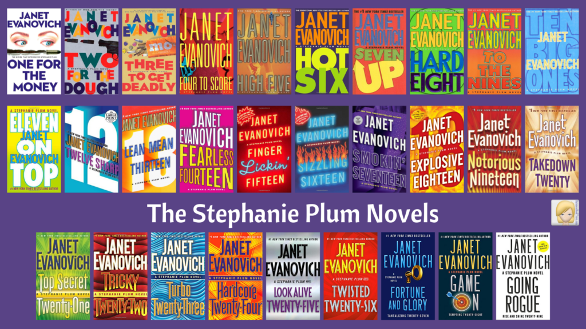

Janet Evanovich's Stephanie Plum series is one of my favorite collections of books. Beginning with One for the Money, the series follows Stephanie Plum, a struggling New Jersey woman who unexpectedly finds herself working as a bounty hunter. What starts as a desperate attempt to earn money quickly turns into a long-running adventure filled with mystery, danger, romance, and comedy.
The reason these books stood out to me is that they never felt like traditional crime novels. While every story includes an investigation, the real appeal is the colorful cast of characters and the situations Stephanie finds herself in. The series consistently balances suspense with laugh-out-loud humor, creating a reading experience that is both entertaining and easy to enjoy.
One of the greatest strengths of the series is its cast of recurring characters. Stephanie is relatable because she is far from perfect. She often makes mistakes, second-guesses herself, and somehow finds trouble wherever she goes. Grandma Mazur frequently steals every scene she appears in with her fearless attitude and curiosity about everything around her.
Another reason I continued reading the books was the relationships between Stephanie, Joe Morelli, and Ranger. Their complicated dynamic adds another layer of interest beyond the mystery plots themselves. Lula is also impossible to ignore. Her confidence, humor, and outrageous comments often provide some of the funniest moments in the series.
Many long-running book series eventually become repetitive, but the Stephanie Plum novels remained enjoyable because of the characters. Even when certain situations felt familiar, I always wanted to know what kind of case Stephanie would take on next and how much chaos would follow. The combination of mystery, romance, action, and comedy kept me invested through every book.
Some readers may view the predictable formula as a weakness, but I see it as part of the series' appeal. Every novel delivers what fans expect while still introducing new adventures and challenges. The books became a source of comfort reading because I knew I could always count on them to be fun, entertaining, and full of surprises.
After reading the entire Stephanie Plum series, I can confidently say it is one of the most enjoyable series I have ever completed. The books combine strong characters, engaging mysteries, and humor in a way that few authors accomplish successfully. Although there are moments where the stories follow familiar patterns, the characters are so entertaining that I never lost interest.
I would recommend this series to anyone who enjoys mysteries but wants something lighter and more humorous than a typical crime novel. For me, Janet Evanovich created a world that was easy to revisit again